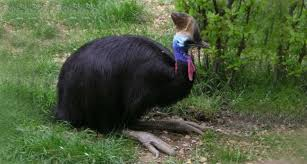
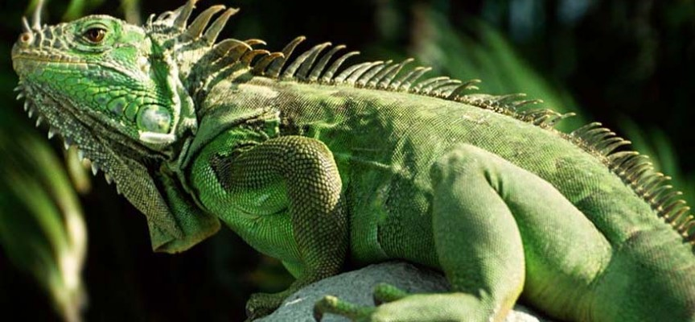
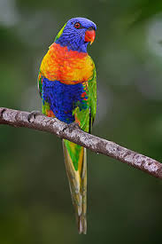
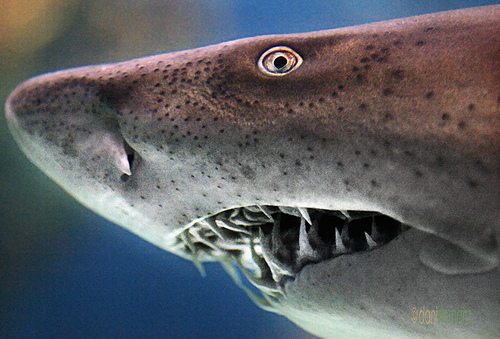

Casuarius es un género de aves Casuariiformes de la familia Casuariidae
conocidas vulgarmente como casuarios. Está compuesto por tres especies que se
distribuyen en Australia y Nueva Guinea. Son aves solitarias no voladoras que
viven en la selva lluviosa tropical,
donde se alimentan de las frutas caídas, de algunos hongos y pequeños animales.

La iguana crestada de Fiyi es herbívora, se alimenta de hojas, brotes,
frutos y flores de árboles y arbustos de las especies Cevua (Vavaea amicorum),
Kau loa (Diospyros elliptica), Qiqila (Micromelum minutum), Vau (Hibiscus tiliaceus),
Yagata (Mallotus tiliifolius), Moive (Kingiodendrun platycarpum), Vesiwai
(Pongamia pinnata), Cibi cibi (Cynometra insulari),
y de las especies introducidas Passiflora suberosa y Jasminum didymium.

El lori arcoíris (Trichoglossus haematodus) es una especie de ave psitaciforme de
la familia Psittaculidae que se distribuye por Nueva Guinea, Indonesia, Timor,
Vanuatu, Islas Salomón y la costa oriental de Australia, donde habita desde
Queensland hasta Australia Meridional;
se encuentra también en regiones insulares cercanas y en el noreste de Tasmania.

El tiburón sarda o tiburón toro, (México) tiburón lamia (España) o
tiburón del Zambesi (Carcharhinus leucas) es una especie de elasmobranquio
carcarriniforme de la familia Carcharhinidae. Es uno de los pocos tiburones
que remonta los estuarios
para alcanzar aguas dulces. Llega a medir hasta 3,4 m de largo.